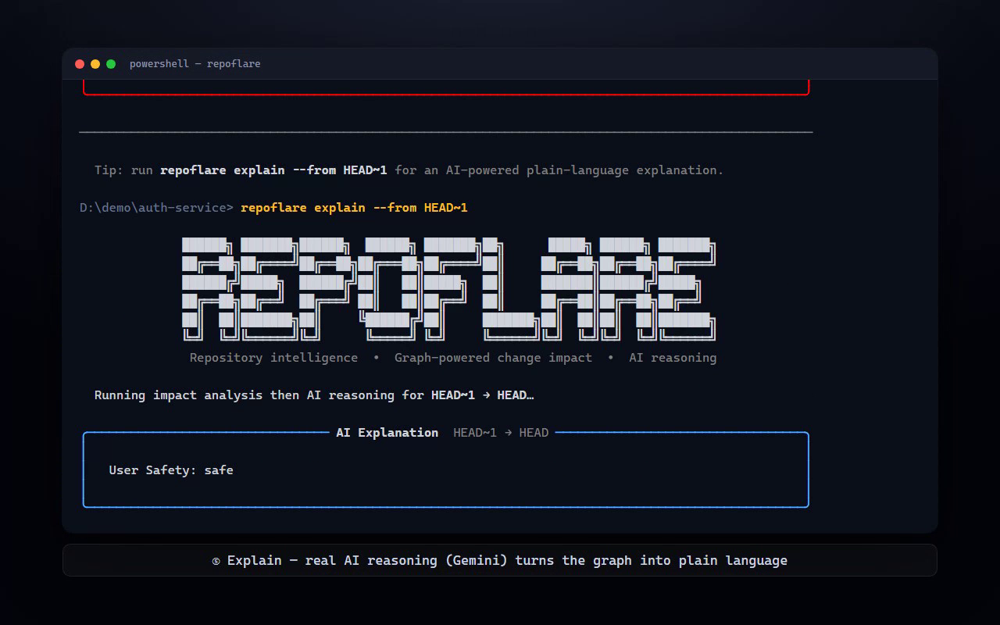
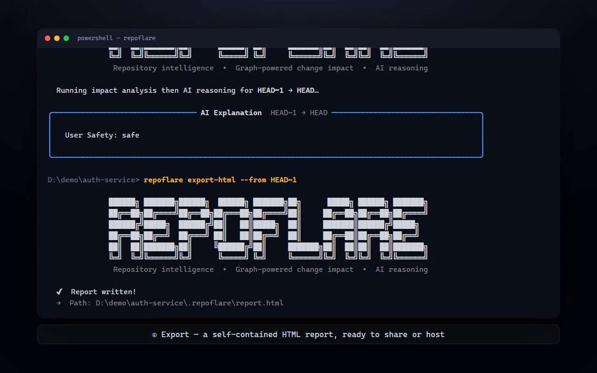

RepoFlare builds a live knowledge graph of your codebase — files, symbols, calls, imports, tests — then answers "what does this affect?" with deterministic graph traversal first, and AI reasoning only where traversal alone can't explain the "why."
Init → analyze → impact → explain → export — run entirely from the terminal, or the same graph surfaced live inside VS Code.
The CLI and the VS Code extension are thin interfaces over one shared Python core — nothing is duplicated, nothing drifts between them.
A five-command workflow: init, analyze, status, impact, explain, export-html. Rich terminal output, real AI reasoning, zero cloud dependency by default.
repoflare init — set up a local graph databaserepoflare analyze — scan, parse, build the graphrepoflare impact --from <ref> — deterministic blast-radiusrepoflare explain --from <ref> — AI plain-language explanationrepoflare export-html — shareable static report
The same graph, live in your editor. Analyze, impact, and an interactive dependency graph view without leaving your file.

Impact analysis is deterministic — a recursive graph traversal over real parsed symbols, not a model guessing at file names.
Works fully offline for scan/analyze/impact. AI-powered explain needs a free
Gemini or OpenRouter key.
# clone and install git clone https://github.com/Tahleels/repoflare.git cd repoflare/core && uv sync # point it at any repo and see what a change affects uv run repoflare init uv run repoflare analyze uv run repoflare impact --from HEAD~1 # deterministic blast-radius uv run repoflare explain --from HEAD~1 # AI plain-language explanation